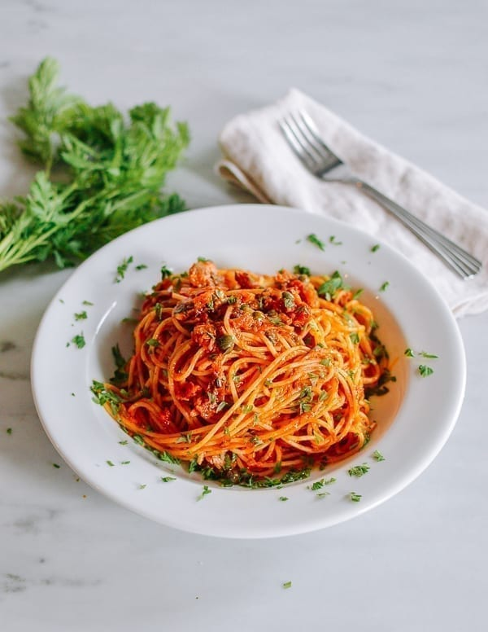

Tuna Tomato Pasta

Today, we’re sharing our Tuna Tomato Pasta, which can be made with just 9 ingredients that many of you probably have on hand.
Ingridients
Here are ingridients for this recepie(optional are marked with *)
- Pasta: you can use spaghetti, macaroni or any pasta you prefer, 125 grams per person
- Tuna: we recommend using can with tuna in olive oil, 80 grams per person
- Garlic: two cloves
- Passata: 300 ml (or more if you like)
- *Parsle: choped, fresh or dry
- *Chilli Papper
Directions
Steps for this dish:
- Add olive oil in pan
- Add chopped garlic, fry for 1 minute
- Add tuna
- Cook pasta in boiled water; follow the rules on declaration
- Add passata in pan with tuna
- Stir for 10 minutes
- Add pasta with tuna and passata
- *Add parsley and papper
- Cook for two more minutes and serve hot!
The Odin Project